Image Denoising with Wavelets
This numerical tour uses wavelets to perform non-linear image denoising.
Contents
- Installing toolboxes and setting up the path.
- Image Denoising
- Image loading and adding Gaussian Noise
- Hard Thresholding in Wavelet Bases
- Wavelet Denoising with Soft Thesholding
- Translation Invariant Denoising with Cycle Spinning
- Translation Invariant Wavelet Transform
- Translation Invariant Wavelet Denoising
Installing toolboxes and setting up the path.
You need to download the following files: signal toolbox and general toolbox.
You need to unzip these toolboxes in your working directory, so that you have toolbox_signal and toolbox_general in your directory.
For Scilab user: you must replace the Matlab comment '%' by its Scilab counterpart '//'.
Recommandation: You should create a text file named for instance numericaltour.sce (in Scilab) or numericaltour.m (in Matlab) to write all the Scilab/Matlab command you want to execute. Then, simply run exec('numericaltour.sce'); (in Scilab) or numericaltour; (in Matlab) to run the commands.
Execute this line only if you are using Matlab.
getd = @(p)path(p,path); % scilab users must *not* execute this
Then you can add the toolboxes to the path.
getd('toolbox_signal/'); getd('toolbox_general/');
Image Denoising
We consider a simple generative model of noisy images \(F = f_0+W\) where \(f_0 \in \RR^N\) is a deterministic image of \(N\) pixels, and \(W\) is a Gaussian white noise distributed according to \(\Nn(0,\si^2 \text{Id}_N)\), where \(\si^2\) is the variance of noise.
The goal of denoising is to define an estimator \(\tilde F\) of \(f_0\) that depends only on \(F\), i.e. \(\tilde F = \phi(F)\) where \(\phi : \RR^N \rightarrow \RR^N\) is a potentially non-linear mapping.
Note that while \(f_0\) is a deterministic image, both \(F\) and \(\tilde F\) are random variables (hence the capital letters).
The goal of denoising is to reduce as much as possible the denoising error given some prior knowledge on the (unknown) image \(f_0\). A mathematical way to measure this error is to bound the quadratic risk \(\EE_w(\norm{\tilde F - f_0}^2)\), where the expectation is computed with respect to the distribution of the noise \(W\).
Image loading and adding Gaussian Noise
For real life applications, one does not have access to the underlying image \(f_0\). In this tour, we however assume that \(f_0\) is known, and \(f = f_0 + w\in \RR^N\) is generated using a single realization of the noise \(w\) that is drawn from \(W\). We define the estimated deterministic image as \(\tilde f = \phi(f)\) which is a realization of the random vector \(\tilde F\).
First we load an image \(f \in \RR^N\) where \(N=n \times n\) is the number of pixels.
n = 256; name = 'hibiscus'; f0 = rescale( load_image(name,n) ); if using_matlab() f0 = rescale( sum(f0,3) ); end
Display it.
clf; imageplot(f0);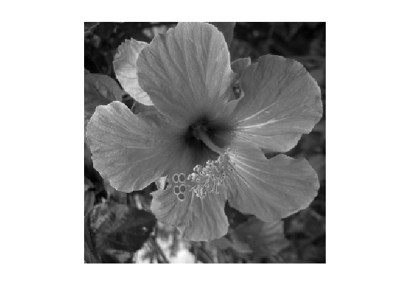
Standard deviation \(\si\) of the noise.
sigma = .08;
Then we add Gaussian noise \(w\) to obtain \(f=f_0+w\).
f = f0 + sigma*randn(size(f0));
Display the noisy image. Note the use of the clamp function to saturate the result to \([0,1]\) to avoid a loss of contrast of the display.
clf;
imageplot(clamp(f), strcat(['Noisy, SNR=' num2str(snr(f0,f),3)]));
Hard Thresholding in Wavelet Bases
A simple but efficient non-linear denoising estimator is obtained by thresholding the coefficients of \(f\) in a well chosen orthogonal basis \(\Bb = \{\psi_m\}_m\) of \(\RR^N\).
In the following, we will focuss on a wavelet basis, which is efficient to denoise piecewise regular images.
The hard thresholding operator with threshold \(T \geq 0\) applied to some image \(f\) is defined as \[ S_T^0(f) = \sum_{\abs{\dotp{f}{\psi_m}}>T} \dotp{f}{\psi_m} \psi_m = \sum_m s_T^0(\dotp{f}{\psi_m}) \psi_m \] where the hard thresholding operator is \[ s_T^0(\alpha) = \choice{ \alpha \qifq \abs{\al}>T, \\ 0 \quad\text{otherwise}. } \]
The denoising estimator is then defined as \[ \tilde f = S_T^0(f). \]
Set the threshold value.
T = 1;
Display the function \(s_T^0(\al)\).
alpha = linspace(-3,3,1000);
clf;
plot(alpha, alpha.*(abs(alpha)>T));
axis tight;
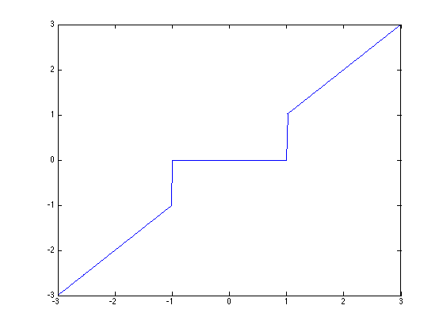 Parameters for the orthogonal wavelet transform.
options.ti = 0; Jmin = 4;
First we compute the wavelet coefficients \(a\) of the noisy image \(f\).
a = perform_wavelet_transf(f,Jmin,+1,options);
Display the noisy coefficients.
clf; plot_wavelet(a,Jmin);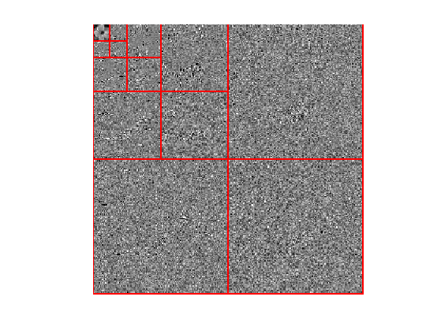
Select the threshold value, that should be proportional to the noise level \(\si\).
T = 3*sigma;
Hard threshold the coefficients below the noise level to obtain \(a_T(m)=s_T^0(a_m)\).
aT = a .* (abs(a)>T);
Display the thresholded coefficients.
clf; plot_wavelet(aT,Jmin);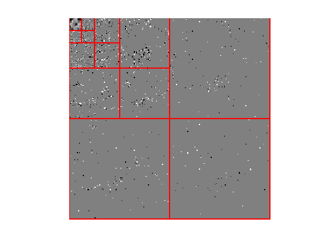
Reconstruct the image \(\tilde f\) from these noisy coefficients.
fHard = perform_wavelet_transf(aT,Jmin,-1,options);
Display the denoising result.
clf;
imageplot(clamp(fHard), strcat(['Hard denoising, SNR=' num2str(snr(f0,fHard),3)]));
Wavelet Denoising with Soft Thesholding
The estimated image \(\tilde f\) using hard thresholding. suffers from many artifacts. It is possible to improve the result by using soft thresholding, defined as \[ \tilde f = S_T^1(f) = \sum_m s_T^1(\dotp{f}{\psi_m}) \psi_m \] \[ \qwhereq s_T^1(\alpha) = \max\pa{0, 1 - \frac{T}{\abs{\alpha}}}\alpha. \]
Display the soft thresholding function \(s_T^1(\al)\).
T = 1;
alpha = linspace(-3,3,1000);
alphaT = max(1-T./abs(alpha), 0).*alpha;
clf;
plot(alpha, alphaT);
axis tight;
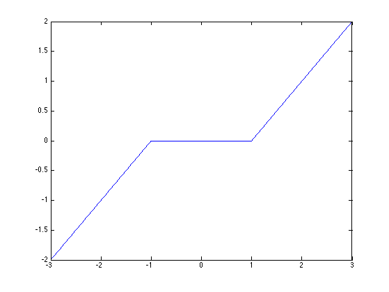 Select the threshold.
T = 3/2*sigma;
Perform the soft thresholding.
aT = perform_thresholding(a,T,'soft');
To slightly improve the soft thresholding performance, we do not threshold the coefficients corresponding to coarse scale wavelets.
aT(1:2^Jmin,1:2^Jmin) = a(1:2^Jmin,1:2^Jmin);
Re-construct the soft thresholding estimator \(\tilde f\).
fSoft = perform_wavelet_transf(aT,Jmin,-1,options);
Display the soft thresholding denoising result.
clf;
imageplot(clamp(fSoft), strcat(['Soft denoising, SNR=' num2str(snr(f0,fSoft),3)]));

One can prove that if the non-linear approximation error \( \norm{f_0-S_T(f_0)}^2 \) decays fast toward zero when \(T\) decreases, then the quadratic risk \( \EE_w( \norm{f-S_T(f)}^2 ) \) also decays fast to zero when \(\si\) decays. For this result to hold, it is required to select the threshold value according to the universal threshold rule \[ T = \si \sqrt{2\log(N)}. \]
Exercice 1: (check the solution) Determine the best threshold \(T\) for both hard and soft thresholding. Test several \(T\) values in \([.8*\sigma, 4.5\sigma\), and display the empirical SNR \(-10\log_{10}(\norm{f_0-\tilde f}/\norm{f_0})\) What can you conclude from these results ? Test with another image.
exo1;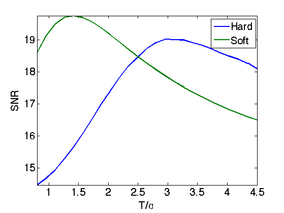
Translation Invariant Denoising with Cycle Spinning
Orthogonal wavelet transforms are not translation invariant. It means that the processing of an image and of a translated version of the image give different results.
Any denoiser can be turned into a translation invariant denoiser by performing a cycle spinning. The denoiser is applied to several shifted copies of the image, then the resulting denoised image are shifted back to the original position, and the results are averaged.
This corresponds to defining the estimator as \[ \tilde f = \frac{1}{M} \sum_{i=1}^{M} T_{-\de_i} \circ S_T(f) \circ T_{\de_i}\] where \(S_T\) is either the hard or soft thresholding, and \(T_\de(f)(x) = f(x-\de)\) is the translation operator, using periodic boundary conditions. Here \((\de_i)_i\) is a set of \(M\) discrete translation. Perfect invariance is obtained by using all possible \(N\) translatation, but usually a small number \(M \ll N\) of translation is used to obtain approximate invariance.
Number \(m\) of translations along each direction so that \(M = m^2\).
m = 4;
Generate a set of shifts \((\de_i)_i\).
[dY,dX] = meshgrid(0:m-1,0:m-1); delta = [dX(:) dY(:)]';
To avoid storing all the translates in memory, one can perform a progressive averaging of the translates by defining \(f^{(0)}=0\) and then \[ \forall\, i=1,\ldots,M, \quad f^{(i)} = \pa{1-\frac{i}{n}} f^{(i-1)} + \frac{i}{n} T_{-\de_i} \circ S_T(f) \circ T_{\de_i} \] One then has \(\tilde f = f^{(M)} \) after \(M\) steps.
Initialize the denoised image \(f^{(0)}=0\).
fTI = zeros(n,n);
Initialize the index \(i\) that should run in \(1,\ldots,m^2\)
i = 1;
Apply the shift, using circular boundary conditions.
fS = circshift(f,delta(:,i));
Apply here the denoising to fS.
a = perform_wavelet_transf(fS,Jmin,1,options);
aT = perform_thresholding(a,T,'hard');
fS = perform_wavelet_transf(aT,Jmin,-1,options);
After denoising, do the inverse shift.
fS = circshift(fS,-delta(:,i));
Accumulate the result to obtain at the end the denoised image that averahe the translated results.
fTI = (i-1)/i*fTI + 1/i*fS;
Exercice 2: (check the solution) Perform the cycle spinning denoising by iterating on \(i\).
exo2;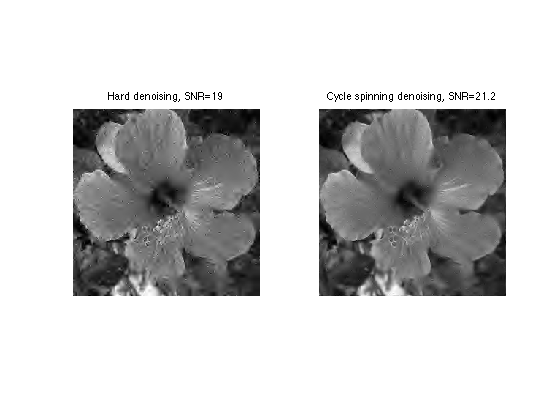
Exercice 3: (check the solution) Study the influence of the number \(m\) of shift on the denoising quality.
exo3;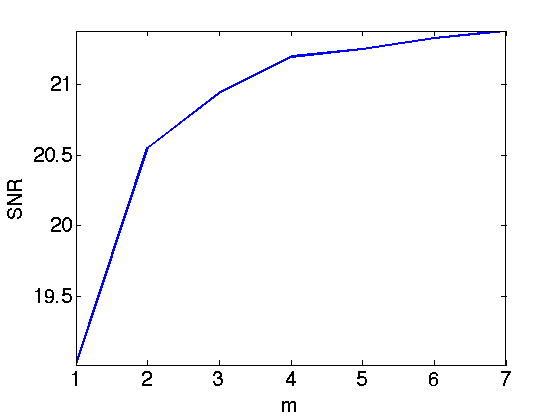
Translation Invariant Wavelet Transform
Another way to achieve translation invariance, which is equivalent to performing cycle spinning, is to replace the orthogonal wavelet basis \(\Bb = \{\psi_m\}_{m=0}^{N-1}\) by a redundant translation invariant wavelet frame \[ \Dd = \enscond{ \psi_m(\cdot-\de) }{ m = 0,\ldots,N-1, \de \in \{0,\ldots,n-1\}^2 }. \]
One can prove that there is actually only \(P = N\log_2(N)\) atoms in this dictionary, that we note \(\De = \{\tilde \psi_k\}_{k=0}^{P-1}\).
One can furthermore define weights \(\la_k>0\) so that the following reconstruction formula holds (pseudo-invers reconstruction) \[ f = \sum_k \la_k \dotp{f}{\tilde \psi_k} \tilde \psi_k. \]
For Scilab, we need to extend a little the available memory.
Important: If you are using an old version (<v5) of Scilab, then use extend_stack_size(4,1) instead.
extend_stack_size(4);
The invariant transform is obtained using the same function, by activating the switch options.ti=1.
options.ti = 1; a = perform_wavelet_transf(f0,Jmin,+1,options);
a(:,:,1) corresponds to the low scale residual. Each a(:,:,3*j+k+1) for k=1:3 (orientation) corresponds to a scale of wavelet coefficient, and has the same size as the original image.
clf; i = 0; for j=1:2 for k=1:3 i = i+1; imageplot(a(:,:,i+1), strcat(['Scale=' num2str(j) ' Orientation=' num2str(k)]), 2,3,i ); end end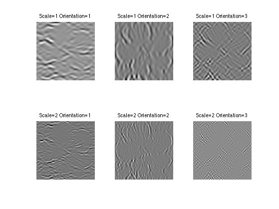
Translation Invariant Wavelet Denoising
A translation invariant thresholding estimator is defined as \[ \tilde f = \sum_k \la_k s_T(\dotp{f}{\tilde \psi_k}) \tilde \psi_k, \] where \(s_T\) is either the soft or the hard thresholding mapping.
This estimator is equal to the cycle spinning estimator when using the full set \(M=N\) of translates. It is however much faster to compute because computing the whole set of \(N\log_2(N)\) inner products \((\dotp{f}{\tilde\psi_k})_k\) is obtained with the fast a trou algorithm in \(O(N\log_2(N))\) operations. Similarely, a fast inverse transform with the same complexity allows one to reconstruct \(\tilde f\) from the set of thresholded coefficients.
First we compute the translation invariant wavelet transform
options.ti = 1; a = perform_wavelet_transf(f,Jmin,+1,options);
Then we threshold the set of coefficients.
T = 3.5*sigma;
aT = perform_thresholding(a,T,'hard');
Display noisy wavelets coefficients at a given fixed scale.
J = size(a,3)-5;
clf;
imageplot(a(:,:,J), 'Noisy coefficients');
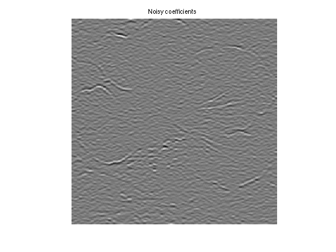 Display thresholded wavelets coefficients
clf;
imageplot(aT(:,:,J), 'Thresholded coefficients');
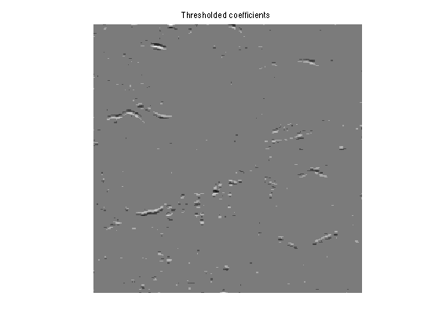 We can now reconstruct
fTI = perform_wavelet_transf(aT,Jmin,-1,options);
Display the denoising result \(\tilde f\).
clf;
imageplot(clamp(fTI), strcat(['Hard invariant, SNR=' num2str(snr(f0,fTI),3)]));
Exercice 4: (check the solution) Determine the best threshold \(T\) for both hard and soft thresholding, but now in the translation invariant case. What can you conclude ?
exo4;